| ・ カレー (R01.01.11) | |||
なんか忙しいと無性にガッツリとしたカレー食べたくなるよね！と助教の人。ということで、チキンカレーをみんなでいただきました。チキンは骨付きでちゃんと焼いてから。 じっくり煮込むので野菜は大きめにして焼く。トマトはつぶしたのを一缶いれて少し煮る。あとハチミツあれば少々。セロリの葉はルーを入れてひと煮たちしてから。 もっとガッツリいくときは赤ワインを入れたいところ。ごはんはかためで。 |
|||
|
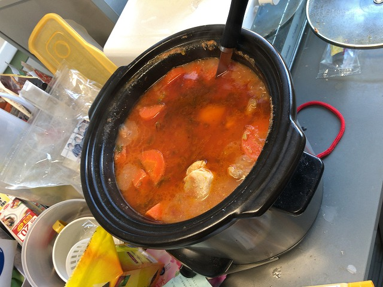
スロークッカーで昨日から煮込んで |
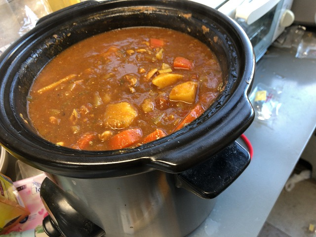
いい感じに | ||
|
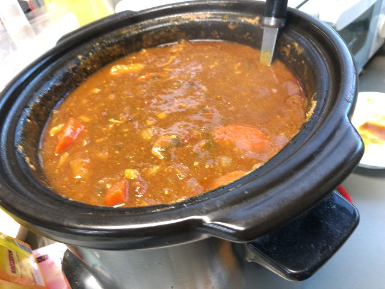
チキンが溶けて極鶏っぽい |
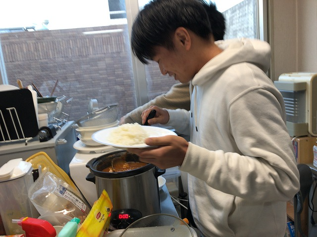
修論も山場にかかって | ||
|
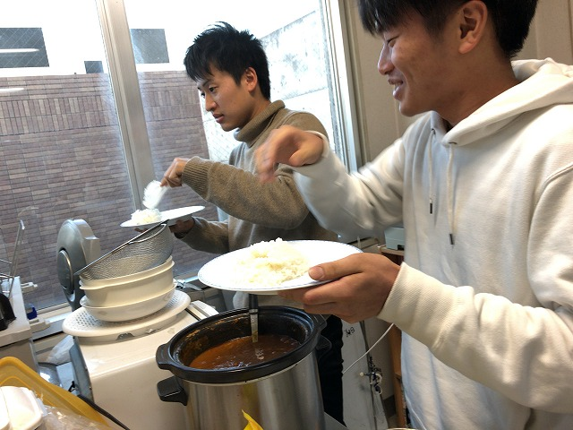
馬力が必要なこのごろ |
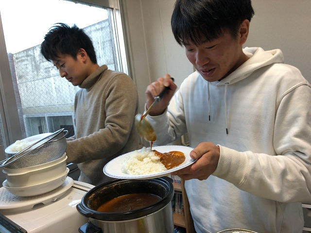
馬力が欲しい人集合 | ||
|
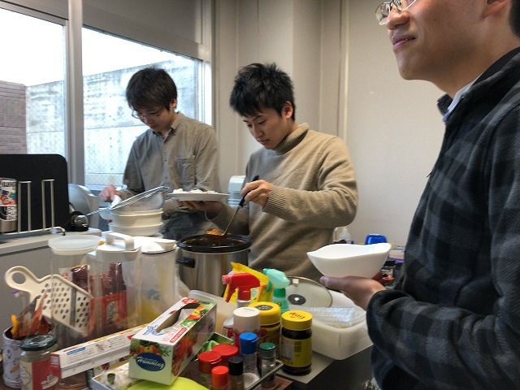
晩御飯あるけど |
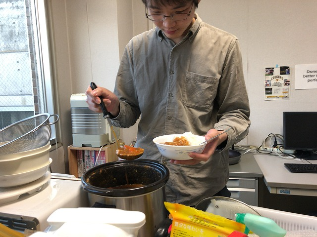
カレーは別腹 | ||
|
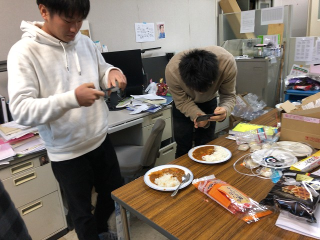
T田シェフのインスタ掲載 |
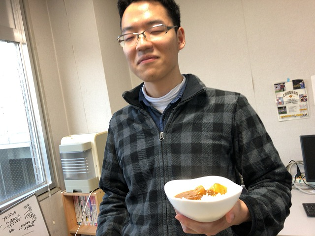
カレーの人！ | ||
|
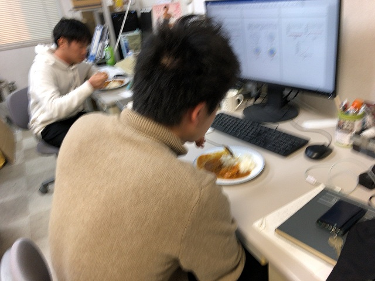
さて、もうひと頑張り |
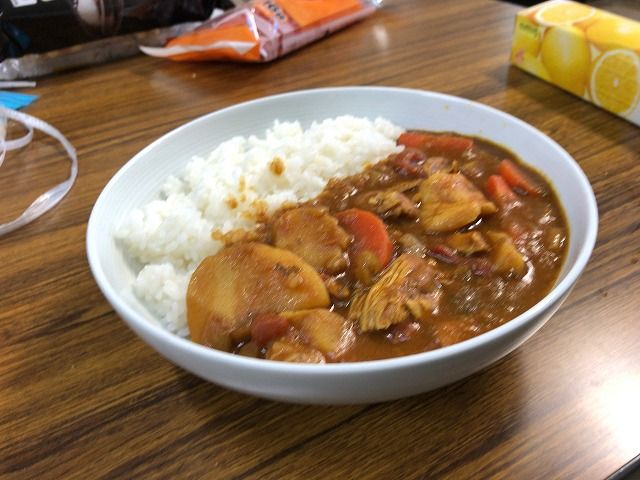
薬膳みたいな | ||